One World Model, Different Embodiments
A single jointly trained checkpoint predicts manipulation and whole-body motion across all three robot families, using each robot’s native action inputs.
Different Actions, Different Futures
From the same initial observation, changing the action sequence produces different predicted hand motions and object responses.
Locomoting Humanoid
Input — actions
Output — predicted future
Replay the recorded whole-body action sequence.
Fixed-Base Bimanual
Input — actions
Output — predicted future
Replay the recorded action sequence.
Qualitative action responses. The first four conditions share an initial observation; time reversal starts from the original prediction’s final frame.
One Trajectory, Multiple Views
MiX-World jointly predicts head, wrist, and third-person views of the same interaction, capturing scene changes as the robot and its cameras move.
Adapting to New Tasks and Robots
Shared pretraining improves adaptation to new tasks on familiar robot families and to previously unseen embodiments. MiX-World and Wan are compared with the same target data and training budgets.
New Tasks on Familiar Robots
New Robot Embodiments
Generalizing to Unseen Scenes
Edit the initial scene while keeping the actions fixed. MiX-World carries changes in background, layout, and objects into its predicted futures.
Fixed-Base Bimanual · Bottle Opening
4.8 s prediction
Mobile Bimanual · Collecting Chips
First 19.2 s of a 96 s rollout
Qualitative examples use scenes constructed by editing the first observation after training.
The source video is the recorded future of the unedited scene, provided for reference. Ground truth is unavailable for the edited scenes.
Predicting events at the right physical times
Brief events can fall between uniformly sampled frames. EAS samples more densely around events and less densely where little changes, and TA-RoPE anchors every sampled frame to physical time — so predictions line up with the reference at matched physical times.
Drag to compare the same moment. Playback resumes after 5 seconds.
Ground truth, fixed-rate baseline, and EAS with TA-RoPE at matched physical times · ceiling view.
From Action Following to Interaction Dynamics
In the checkpoint comparisons, coarse action following appears first, followed by coherent scene evolution across time and views. Later, object motion and deformation become more consistent with the robot’s contact.
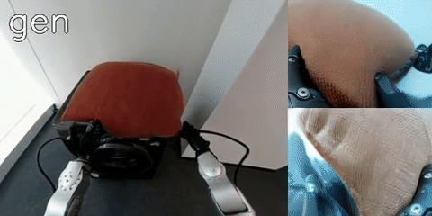
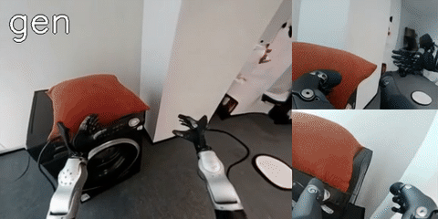
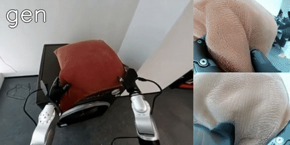
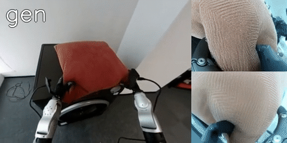
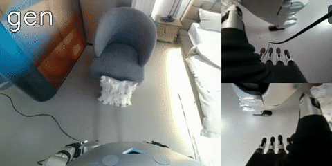
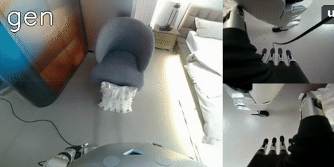
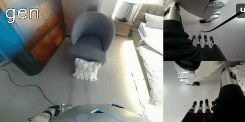
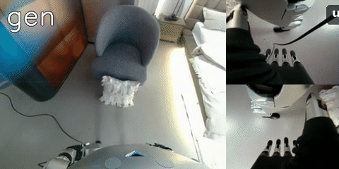
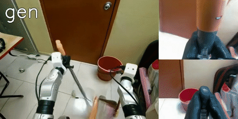
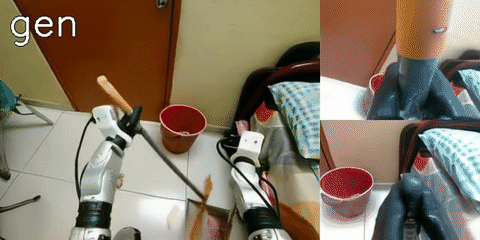
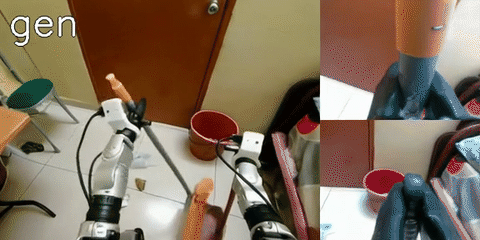
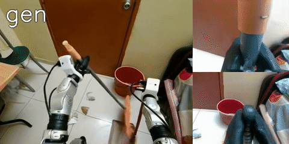
Selected training examples illustrate this progression; the order is not a universal rule.
How MiX-World Works
A shared video generator predicts synchronized future views from the current observation, a language instruction, and each robot’s native action sequence.
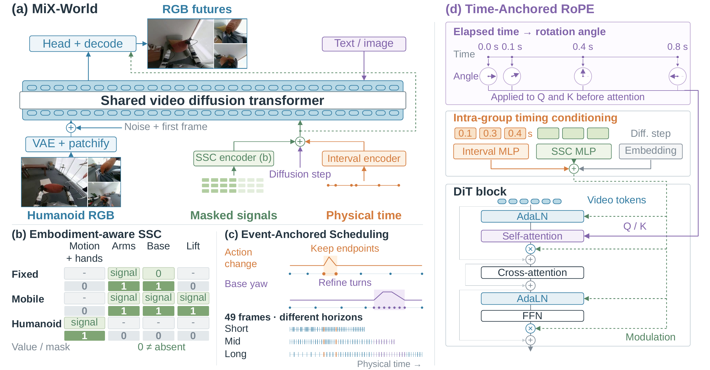
- Semantically Structured Conditioning (SSC). Organizes robot controls by physical meaning, with masks for the fields each robot uses.
- Event-Anchored Scheduling (EAS). Keeps frames around abrupt action changes while sampling trajectories at multiple timescales.
- Time-Anchored RoPE (TA-RoPE). Encodes elapsed physical time so predictions account for uneven intervals between sampled frames.